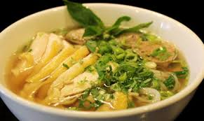
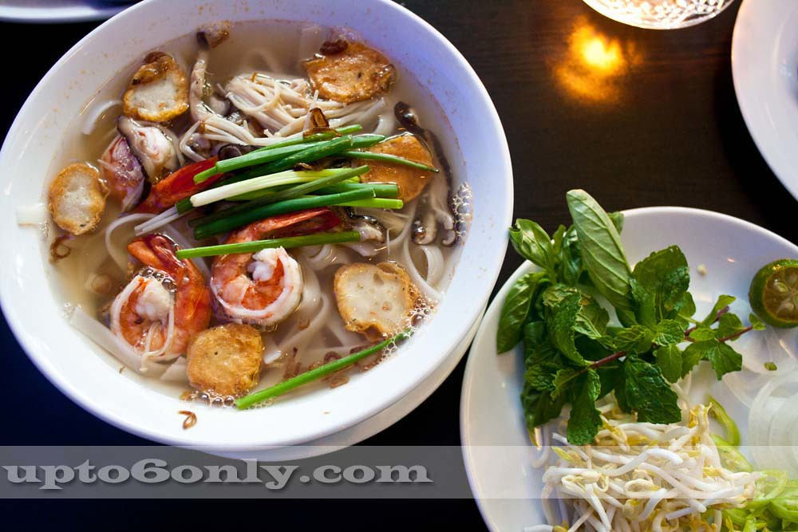

牛肉フォー
牛バラ・モモをトッピング！２種類の味が楽しめちゃいます！

牛すじフォー
牛すじ牛すじの茹で汁はスープのベースに味がめちゃ美味しいです！

鶏肉フォー
鶏もも肉をトッピング！あっさりとヘルシー！当店Ｎｏ1 メニューです！

辛海鮮フォー
えび・イカ・ホタテをトッピング！ピリ辛海鮮スープが超美味しい！辛いのがお好きな方におすすめのふぉーです！
年中無休 9:00 ～ 21:00。
年中無休 9:00 ～ 21:00。